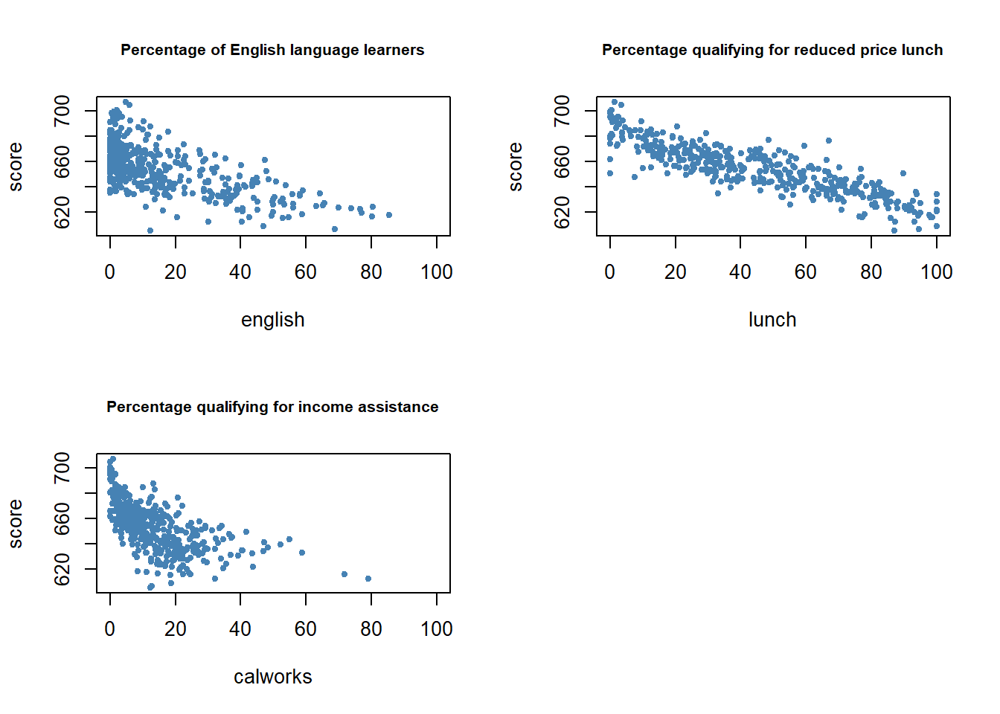
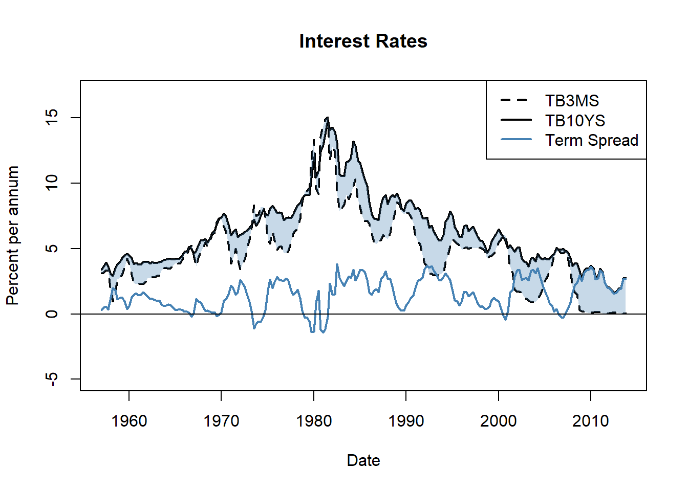

2.1 Random Variables and Probability Distributions
For a start, let us briefly review some basic concepts of probability theory.
- The mutually exclusive results of a random process are called the outcomes. ‘Mutually exclusive’ means that only one of the possible outcomes is observed.
- We refer to the probability of an outcome as the proportion of the time that the outcome occurs in the long run, that is if the experiment is repeated very often.
- The set of all possible outcomes of a random variable is called the sample space.
- An event is a subset of the sample space and consists of one or more outcomes.
These ideas are unified in the concept of a random variable which is a numerical summary of random outcomes. Random variables can be discrete or continuous.
- Discrete random variables have discrete outcomes, e.g. \(0\) and \(1\).
- A continuous random variable takes on a continuum of possible values.
Probability Distributions of Discrete Random Variables
A typical example for a discrete random variable \(D\) is the result of a die roll: in terms of a random experiment this is nothing but randomly selecting a sample of size \(1\) from a set of numbers which are mutually exclusive outcomes. Here, the sample space is \(\{1,2,3,4,5,6\}\) and we can think of many different events, e.g. ‘the observed outcome lies between \(2\) and \(5\)’.
A basic function to draw random samples from a specified set of elements is the the function sample(), see ?sample. We can use it to simulate the random outcome of a die roll. Let’s role the die!
sample(1:6, 1) ## [1] 4The probability distribution of a discrete random variable is the list of all possible values of the variable and their probabilities which sum to \(1\). The cumulative probability distribution function states the probability that the random variable is less than or equal to a particular value.
For the die roll, this is straightforward to summarize in a table:
| Outcome | 1 | 2 | 3 | 4 | 5 | 6 |
|---|---|---|---|---|---|---|
| Probability distribution | 1/6 | 1/6 | 1/6 | 1/6 | 1/6 | 1/6 |
| Cumulative probability distribution | 1/6 | 2/6 | 3/6 | 4/6 | 5/6 | 1 |
We can easily plot both functions using R. Since the probability equals \(1/6\) for each outcome, we set up the vector probability by using the function rep() which replicates a given value a specified number of times.
# generate the vector of probabilities
probability <- rep(1/6, 6)
# plot the probabilites
plot(probability,
xlab = "outcomes",
main = "Probability Distribution"
) 
For the cumulative probability distribution we need the cumulative probabilities i.e. we need the cumulative sums of the vector probability. These sums can be computed using cumsum().
#generate the vector of cumulative probabilities
cum_probability <- cumsum(probability)
# plot the probabilites
plot(cum_probability,
xlab = "outcomes",
main = "Cumulative Probability Distribution"
) 
Bernoulli Trials
The set of elements from which sample() draws outcomes does not have to consist of numbers only. We might as well simulate coin tossing with outcomes \(H\) (heads) and \(T\) (tails).
sample(c("H", "T"), 1) ## [1] "H"The result of a single coin toss is a Bernoulli distributed random variable i.e. a variable with two possible distinct outcomes.
Imagine you are about to toss a coin \(10\) times in a row and wonder how likely it is to end up with a sequence of outcomes like
\[ H \, H \, T \, T \,T \,H \,T \,T \, H \, H .\]
This is a typical example of what we call a Bernoulli experiment as it consists of \(n=10\) Bernoulli trials that are independent of each other and we are interested in the likelihood of observing \(k=5\) successes \(H\) that occur with probability \(p=0.5\) (assuming a fair coin) in each trial. Note that the order of the outcomes does not matter here.
It is a well known result that the number of successes \(k\) in a Bernoulli experiment follows a binomial distribution. We denote this as
\[k \sim B(n,p).\]
The probability of observing \(k\) successes in the experiment \(B(n,p)\) is given by
\[f(k)=P(k)=\begin{pmatrix}n\\ k \end{pmatrix} \cdot p^k \cdot q^{n-k}=\frac{n!}{k!(n-k)!} \cdot p^k \cdot q^{n-k}\]
where \(\begin{pmatrix}n\\ k \end{pmatrix}\) means the binomial coefficient.
In R, we can solve the problem stated above by means of the function dbinom() which calculates the probability of the binomial distribution given the parameters x, size, and prob, see ?binom.
dbinom(x = 5,
size = 10,
prob = 0.5
) ## [1] 0.2460938We conclude that the probability of observing Head \(k=5\) times when tossing the coin \(n=10\) times is about \(24.6\%\).
Now assume we are interested in \(P(4 \leq k \leq 7)\) i.e. the probability of observing \(4\), \(5\), \(6\) or \(7\) successes for \(B(10,0.5)\). This is easily computed by providing a vector as the argument x in our call of dbinom() and summing up using sum().
sum(
dbinom(x = 4:7,
size = 10,
prob = 0.5
)
)## [1] 0.7734375The probability distribution of a discrete random variable is nothing but a list of all possible outcomes that can occur and their respective probabilities. In the coin tossing example we face \(11\) possible outcomes for \(k\).
# set up vector of possible outcomes
k <- 0:10To visualize the probability distribution function of \(k\) we may therefore do the following:
# assign probabilities
probability <- dbinom(x = k,
size = 10,
prob = 0.5
)
# plot outcomes against probabilities
plot(x = k,
y = probability,
main = "Probability Distribution Function"
) 
In a similar fashion we may plot the cumulative distribution function of \(k\) by executing the following code chunk:
# compute cumulative probabilities
prob <- cumsum(
dbinom(x = 0:10,
size = 10,
prob = 0.5
)
)
# plot the cumulative probabilities
plot(x = k,
y = prob,
main = "Cumulative Distribution Function"
) 
Expected Value, Mean and Variance
The expected value of a random variable is the long-run average value of its outcomes when the number of repeated trials is large. For a discrete random variable, the expected value is computed as a weighted average of its possible outcomes whereby the weights are the related probabilities. This is formalized in Key Concept 2.1.
Key Concept 2.1
Expected Value and the Mean
Suppose the random variable \(Y\) takes on \(k\) possible values, \(y_1, \dots, y_k\), where \(y_1\) denotes the first value, \(y_2\) denotes the second value, and so forth, and that the probability that \(Y\) takes on \(y_1\) is \(p_1\), the probability that \(Y\) takes on \(y_2\) is \(p_2\) and so forth. The expected value of \(Y\), \(E(Y)\) is defined as
\[ E(Y) = y_1 p_1 + y_2 p_2 + \cdots + y_k p_k = \sum_{i=1}^k y_i p_i \]
where the notation \(\sum_{i=1}^k y_i p_i\) means “the sum of \(y_i\) \(p_i\) for \(i\) running from \(1\) to \(k\)”. The expected value of \(Y\) is also called the mean of \(Y\) or the expectation of \(Y\) and is denoted by \(\mu_y\).In the die example, the random variable, \(D\) say, takes on \(6\) possible values \(d_1 = 1, d_2 = 2, \dots, d_6 = 6\). Assuming a fair die, each of the \(6\) outcomes occurs with a probability of \(1/6\). It is therefore easy to calculate the exact value of \(E(D)\) by hand:
\[ E(D) = 1/6 \sum_{i=1}^6 d_i = 3.5 \]
\(E(D)\) is simply the average of the natural numbers from \(1\) to \(6\) since all wights \(p_i\) are \(1/6\). Convince yourself that this can be easily calculated using the function mean() which computes the arithmetic mean of a numeric vector.
mean(1:6)## [1] 3.5An example of sampling with replacement is rolling a die three times in a row.
# set random seed for reproducibility
set.seed(1)
# rolling a die three times in a row
sample(1:6, 3, replace = T)## [1] 2 3 4Of course we could also consider a much bigger number of trials, \(10000\) say. Doing so, it would be pointless to simply print the results to the console: by default R displays up to \(1000\) entries of large vectors and omits the remainder (give it a go). Eyeballing the numbers does not reveal too much. Instead let us calculate the sample average of the outcomes using mean() and see if the result comes close to the expected value \(E(D)=3.5\).
# set random seed for reproducibility
set.seed(1)
# compute the sample mean of 10000 die rolls
mean(
sample(1:6,
10000,
replace = T
)
)## [1] 3.5039We find the sample mean to be fairly close to the expected value. This result will be discussed in Chapter 2.3 in more detail.
Other frequently encountered measures are the variance and the standard deviation. Both are measures of the dispersion of a random variable.
Key Concept 2.2
Variance and Standard Deviation
The Variance of the discrete random variable \(Y\), denoted \(\sigma^2_Y\), is \[ \sigma^2_Y = \text{Var}(Y) = E\left[(Y-\mu_y)^2\right] = \sum_{i=1}^k (y_i - \mu_y)^2 p_i \] The standard deviation of \(Y\) is \(\sigma_Y\), the square root of the variance. The units of the standard deviation are the same as the units of \(Y\).
The variance as defined in Key Concept 2.2 is not implemented as a function in R. Instead we have the function var() which computes the sample variance
\[ s^2_Y = \frac{1}{n-1} \sum_{i=1}^n (y_i - \overline{y})^2. \]
Remember that \(s^2_Y\) is different from the so called population variance of \(Y\),
\[ \text{Var}(Y) = \frac{1}{N} \sum_{i=1}^N (y_i - \mu_Y)^2, \]
since it measures how the data is dispersed around the sample average \(\overline{y}\) instead of the population mean \(\mu_Y\). This becomes clear when we look at our die rolling example. For \(D\) we have
\[ \text{Var}(D) = 1/6 \sum_{i=1}^6 (d_i - 3.5)^2 = 2.92 \] which is obviously different from the result of \(s^2\) as computed by var().
var(1:6)## [1] 3.5The sample variance as computed by var() is an estimator of the population variance.
# You may use this widget to play around with the functions presented above